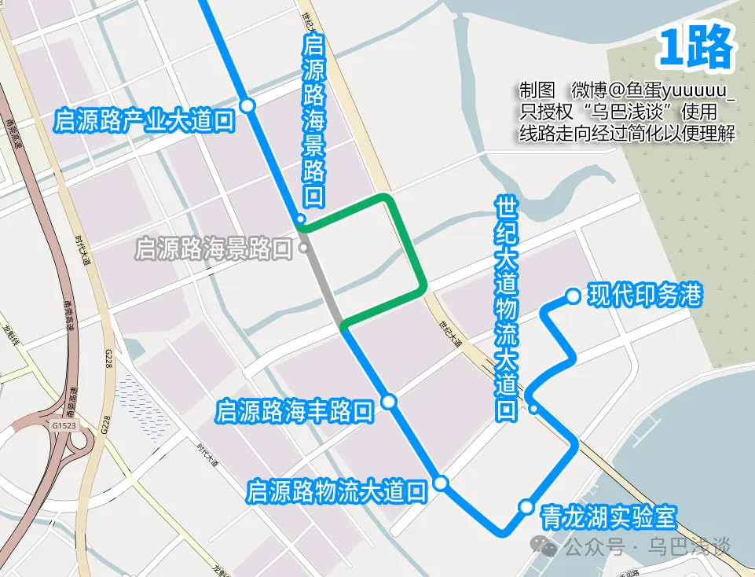
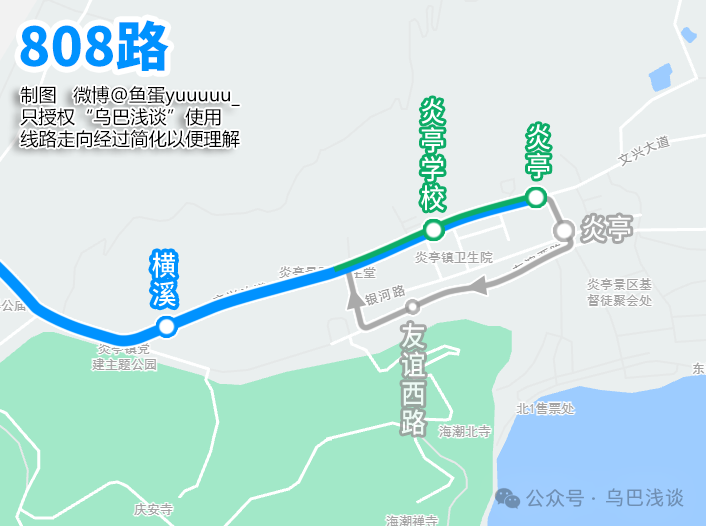

一、龙港公交
-
1路临时调整
施工路段：启源路（海景路至疏港大道路段），预计工期至2026年5月30日
取消站点：启源路海景路口（往现代印务港）
绕行路线：海景路、世纪大道、疏港大道

-
2路临时调整
施工路段：沿江路（龙金大道至西六街路段）
取消站点：礼品城、禁毒协会、江南实验学校
新增站点：锦港嘉园（往经济产业发展中心）、融媒体中心（往龙港客运中心）
-
13路临时调整
施工路段：沿江路（龙金大道至西六街路段）
取消站点：江南实验学校、禁毒协会
新增站点：融媒体中心（往姜立夫故居）、锦港嘉园（往城中首末站）、礼品城
-
A1路临时调整
施工路段：西城路1号桥（西城路513号至西城路529号路段）
取消站点：西排农贸市场（招呼站）、万宝路大酒店（招呼站）、示范工业园（招呼站）
新增站点：西三路西城路口（往江滨公园）、西排社区
-
B11路调整
曾用车型：2020年 金旅6米微公交 XML6606JEVA0C1
2022年 安凯6米微公交 HFF6600E6EV21
2022年 宇通6米微公交 ZK6606BEVG1
现用车型：2023年 安凯6米无站立 HFF6609G6EV22
-
6路、17路、807路临时调整
取消站点：下水门、徐家庄、龙港中学

-
9路、K005路临时调整
取消站点：老台、炉头、环港、浃底、方城浦、友谊社区、潘处、舥艚（山塘文化礼堂）
新增站点：老台临时下客点（往新城华府）、新城华府
-
808路临时调整
取消站点：下水门、徐家庄、龙港中学、梧桥（往炎亭；埭金线站点）、仕家垟（往龙港客运中心）、陈宅、张家堡、陈华垟、东店（往炎亭）、严处（往龙港客运中心）
新增站点：御龙湾锦园（往炎亭）、世纪大道西三路口、体育馆（往龙港客运中心）、郭宕、梧桥（龙金大道站点）、薛家桥、文楼、后垟增、宜山大道

-
808路调整
取消站点：炎亭（原公交首末站）、友谊西路（往龙港客运中心）
新增站点：炎亭（位于文兴大道）、炎亭学校

-
新增8路（园博会专线）
停靠站点：体育中心、青龙湖公园、经济产业发展中心、龙港农商银行、月湖路、政务客厅、城市公园
开通日期：2026年4月15日
运营时间：首班7:00，末班18:00。班次间隔70-75分钟一班
线路票价：免费
纪念车票：乘坐园博专线还能收获独家纪念品！龙港公交特别推出限量版精品车票，票面设计将园博会LOGO与龙港地标剪影巧妙融合，采用环保材质，兼具收藏价值与绿色理念。欢迎乘客上车后自行取阅留念，每人限领一张，把这份限定的“龙港记忆”带回家。
-
部分线路发车间隔调整
12路：约35-40分钟（原为约25分钟）
13路：约30-35分钟（原为约20-25分钟）
17路：约30-35分钟（原为约35-40分钟）
A5路：约20-25分钟（原为约30-35分钟）
A6路：约20-25分钟（原为约30-35分钟）
B11路：约25-30分钟（原为约20-25分钟）
{kind=link}
{kind=link}
{kind=link}
二、苍南公交
-
111路、117路、119路临时调整
-
111路调整
-
117路临时调整